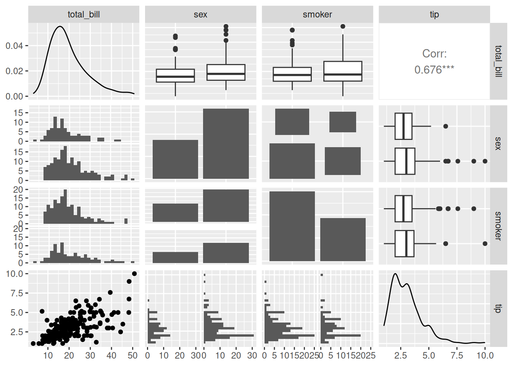

# Install packages
if (!requireNamespace("GGally", quietly = TRUE)) {
install.packages("GGally")
}
if (!requireNamespace("corrplot", quietly = TRUE)) {
install.packages("corrplot")
}
if (!requireNamespace("ggcorrplot", quietly = TRUE)) {
install.packages("ggcorrplot")
}
if (!requireNamespace("corrgram", quietly = TRUE)) {
install.packages("corrgram")
}
# Load packages
library(GGally)
library(corrplot)
library(ggcorrplot)
library(corrgram)Correlogram
Correlogram or Correlation diagrams are often used to summarize the correlation information of various groups of data in the entire dataset.
Example

For example, the above diagram is a correlation heatmap of various groups of data in the mtcars dataset. Colors are used to represent the pairwise correlations of data in different groups, and the shade of the color represents the magnitude of the P-value.
Setup
System Requirements: Cross-platform (Linux/MacOS/Windows)
Programming Language: R
Dependencies:
GGally;corrplot;ggcorrplot;corrgram
Data Preparation
The correlation heatmap is mainly drawn using the built-in datasets in R.
data("flea", package = "GGally")
data_flea <- flea
data("mtcars", package = "datasets")
data_mtcars <- mtcars
data("tips", package = "GGally")
data_tips <- tipsVisualization
1. GGally Package
GGallyis a commonly used tool for drawing correlation diagrams. It allows the injection ofggplot2code but does not have a sorting function.
Drawing of Basic Correlation Diagram
ggpairs(data_flea, columns = 2:5)The above diagram shows the correlation visualization of each group of data in the
fleadataset. The picture consists of three parts: the scatter plot of the correlation between the corresponding two groups of data in the lower part; the density plot of a single group of data on the diagonal; and thePearsoncorrelation coefficient values of the corresponding two groups of data in the upper part.
Introducing ggplot2 Codes to Color Each Category
ggpairs(data_flea, columns = 2:4, ggplot2::aes(colour=species,alpha=0.7)) The above diagram, on the basis of correlation visualization, classifies each category by color.
Customizing the Plotting Type
ggpairs(data_tips[, c(1, 3, 4, 2)])
summary(data_tips) total_bill tip sex smoker day time
Min. : 3.07 Min. : 1.000 Female: 87 No :151 Fri :19 Dinner:176
1st Qu.:13.35 1st Qu.: 2.000 Male :157 Yes: 93 Sat :87 Lunch : 68
Median :17.80 Median : 2.900 Sun :76
Mean :19.79 Mean : 2.998 Thur:62
3rd Qu.:24.13 3rd Qu.: 3.562
Max. :50.81 Max. :10.000
size
Min. :1.00
1st Qu.:2.00
Median :2.00
Mean :2.57
3rd Qu.:3.00
Max. :6.00 In the above diagram,
tatal_billandtipare quantitative data, whilesexandsmokerare qualitative data. In the lower part, scatter plots, histograms, and bar charts of pairwise correlations are mainly drawn according to different data types; in the diagonal part, the distribution diagrams of each group of data are shown; in the upper part, pairwise correlation line charts are drawn according to different data types, and for two quantitative data, thePearsoncorrelation coefficient values are given.
# Changing the plotting type
ggpairs(
data_tips[, c(1, 3, 4, 2)],
upper = list(continuous = "density",
combo = "box_no_facet"),
lower = list(continuous = "points",
combo = "dot_no_facet")
)Through customization, the histogram in the lower part is modified into a scatter plot, and the correlation coefficient values in the upper part are modified into a density plot.
Correlation Visualization
Visualize the correlation coefficients.
ggcorr(data_mtcars) # Draw a correlation coefficient heatmap, with Pearson as the defaultThe above diagram visualizes the correlation coefficients through the
ggcorr（）function.The
methodparameter ofggcorr:The default is in the form of
c("pairwise", "pearson"). The first parameter is to determine the handling of missing values when calculating the covariance, and the second parameter is used to determine the type of correlation coefficient, such as"pearson","kendall"or"spearman".
2. corrplot Package
The
corrplotpackage is a commonly used tool for correlation visualization, which has powerful customization functions and a sorting function.
Basic Plotting
corr <- cor(data_mtcars)
corrplot(corr)
Parameter Customization
The main key parameters of
corrplot():
corrThe correlation coefficient matrix to be visualized
methodThe shape of the visualization
typeThe display range (full, lower, upper)
colThe color of the graph display
addCoef.colThe color of the correlation coefficient values
orderThe sorting method of the correlation coefficients
is.corrWhether to draw a correlation coefficient plot, which isTRUEby default. It can also achieve the visualization of non-correlation coefficients. Just set this parameter toFALSE.……
corrplot(corr,method = "ellipse" ,#method, specify the visualization shape
order = "AOE", #order, the sorting method of the correlation coefficients
addCoef.col="black", # Specify the color of the correlation coefficients
type="lower") # Specify the display part
The above diagram is a correlation coefficient heatmap of the
mtcarsdataset.
type="lower"specifies to display the lower part of the heatmap.The shade of the color represents the magnitude of the correlation coefficient.
The shape of the ellipse represents the correlation coefficient: the greater the eccentricity, the flatter the ellipse, and the larger the absolute value of the correlation coefficient; the smaller the eccentricity, the rounder the ellipse, and the smaller the absolute value of the correlation coefficient. The direction of the long axis of the ellipse represents the positive or negative of the correlation coefficient. The upper right - lower left direction corresponds to a positive value, and the upper left - lower right direction corresponds to a negative value.
Adding Significance Labels
res1 <-cor.mtest(data_mtcars, conf.level= .95)
corrplot(corr, method= "circle",
p.mat= res1$p, sig.level= 0.01, # P-values greater than 0.01 are considered to have no statistical significance
mar= c(1,1,1,1))
The above diagram adds significance labels on the basis of the correlation coefficient heatmap. P-values greater than 0.01 are regarded as having no statistical significance.
3. ggcorrplot Package
The
ggcorrplotpackage is equivalent to a simplified version of thecorrplotpackage, mainly including the calculation function ofcor_pmatand the plotting function ofggcorrplot.
Calculating P-values with cor_pmat
p.mat <- cor_pmat(data_mtcars)
head(p.mat[, 1:6]) mpg cyl disp hp drat
mpg 0.000000e+00 6.112687e-10 9.380327e-10 1.787835e-07 1.776240e-05
cyl 6.112687e-10 0.000000e+00 1.802838e-12 3.477861e-09 8.244636e-06
disp 9.380327e-10 1.802838e-12 0.000000e+00 7.142679e-08 5.282022e-06
hp 1.787835e-07 3.477861e-09 7.142679e-08 0.000000e+00 9.988772e-03
drat 1.776240e-05 8.244636e-06 5.282022e-06 9.988772e-03 0.000000e+00
wt 1.293959e-10 1.217567e-07 1.222320e-11 4.145827e-05 4.784260e-06
wt
mpg 1.293959e-10
cyl 1.217567e-07
disp 1.222320e-11
hp 4.145827e-05
drat 4.784260e-06
wt 0.000000e+00Plotting with ggcorrplot
ggcorrplot(corr, method = "square" )The above diagram is a color heatmap of the correlation coefficients of the
mtcardataset.
ggcorrplot(corr, method = "circle" )
Here we have changed the plotting type to a circle.
4. corrgram Package
The
corrgrampackage is also a good choice for drawing correlation diagrams. It can select the content to be displayed in the upper, lower, and diagonal parts.We mainly use the
corrgram()function to draw the correlation diagram:
cor.methoddetermines the type of correlation coefficient,pearson(default),spearman,kendallDifferent methods can be used for visualization:
panel.ellipsedisplays an ellipsepanel.shadeis used for color blockspanel.pieis used for pie chartspanel.ptsis used for scatter plots
corrgram(data_mtcars, order=TRUE,
lower.panel=panel.shade, # Color blocks
upper.panel=panel.pie, # Pie chart
text.panel=panel.txt,
main="Car Milage Data in PC2/PC1 Order") 
By setting
lower.panel=panel.shadeandupper.panel=panel.pie, the upper part is set as a pie chart, and the lower part is set as a color diagram.
corrgram(data_mtcars, order=TRUE,
lower.panel=panel.ellipse, # Display an ellipse
upper.panel=panel.pts, # Scatter plot
text.panel=panel.txt,
diag.panel=panel.minmax,
main="Car Milage Data in PC2/PC1 Order") 
By setting
lower.panel=panel.ellipseandupper.panel=panel.pts, the upper part is set as a scatter plot, and the lower part is set as an ellipse diagram (where the red line is the fitted curve).
corrgram(data_mtcars, order=NULL,
lower.panel=panel.shade, # Color blocks
upper.panel=NULL,
text.panel=panel.txt,
main="Car Milage Data (unsorted)")
By setting
lower.panel=panel.shadeandupper.panel=NULL, only the color diagram in the lower part is displayed.
Applications

The above diagram is a correlation diagram based on the ANI values of strains. The ANI values between each indicator strain are calculated using the JSpecies software and used for the construction of the Pearson correlation matrix. This diagram shows the correlations constructed and sorted by hierarchical clustering using the
corrplotpackage. [1]

The above diagram shows the correlations between Gain [FF], ILP, wpm, RR, R r-words, R p-words, RN, and VA. The left diagram shows the correlations without excluding the influence of children’s grades; the right diagram shows the correlations after differentiating the grades. The magnitude of the correlation is represented by the size (and color) of the circle. The
corrplotpackage was used for drawing. [2]
Reference
[1] Espariz M, Zuljan FA, Esteban L, Magni C. Taxonomic Identity Resolution of Highly Phylogenetically Related Strains and Selection of Phylogenetic Markers by Using Genome-Scale Methods: The Bacillus pumilus Group Case. PLoS One. 2016 Sep 22;11(9):e0163098. doi: 10.1371/journal.pone.0163098. PMID: 27658251; PMCID: PMC5033322.
[2] Marx C, Hutzler F, Schuster S, Hawelka S. On the Development of Parafoveal Preprocessing: Evidence from the Incremental Boundary Paradigm. Front Psychol. 2016 Apr 14;7:514. doi: 10.3389/fpsyg.2016.00514. PMID: 27148123; PMCID: PMC4830847.
[3] Schloerke B, Cook D, Larmarange J, Briatte F, Marbach M, Thoen E, Elberg A, Crowley J (2024). GGally: Extension to ‘ggplot2’. R package version 2.2.1, CRAN: Package GGally.
[4] Taiyun Wei and Viliam Simko (2024). R package ‘corrplot’: Visualization of a Correlation Matrix (Version 0.94). Available from GitHub - taiyun/corrplot: A visual exploratory tool on correlation matrix
[5] Kassambara A (2023). ggcorrplot: Visualization of a Correlation Matrix using ‘ggplot2’. R package version 0.1.4.1, CRAN: Package ggcorrplot.
[6] Wright K (2021). corrgram: Plot a Correlogram. R package version 1.14, CRAN: Package corrgram.